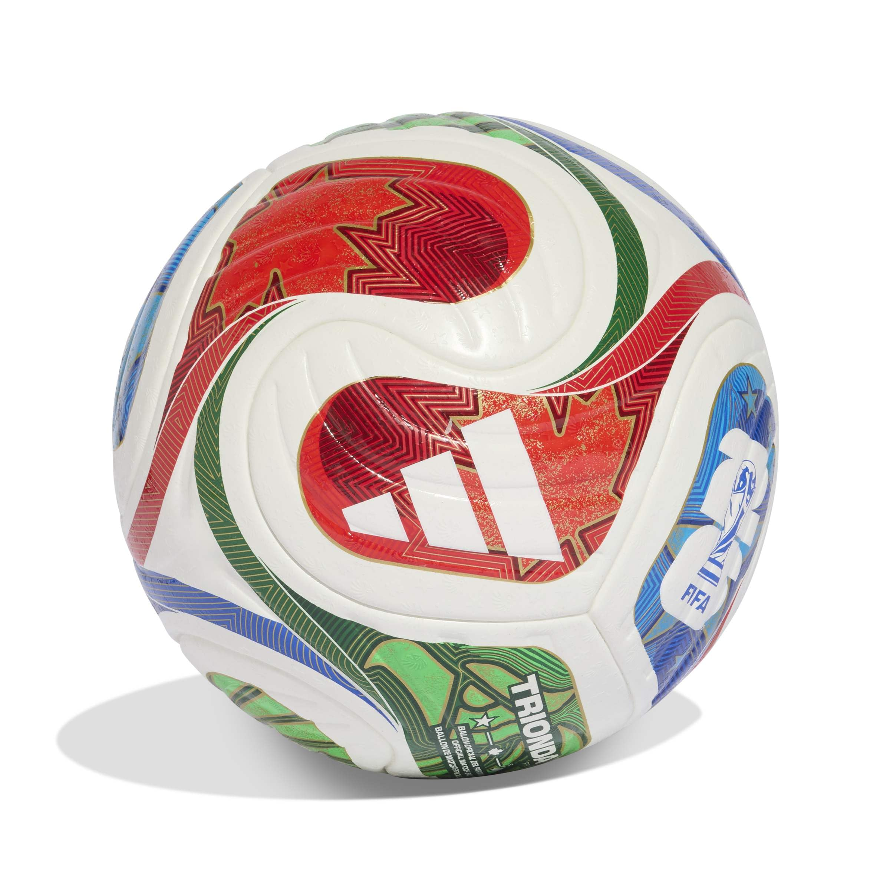
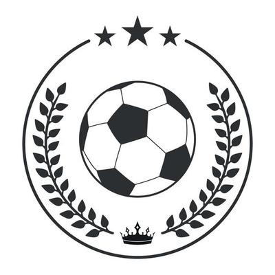
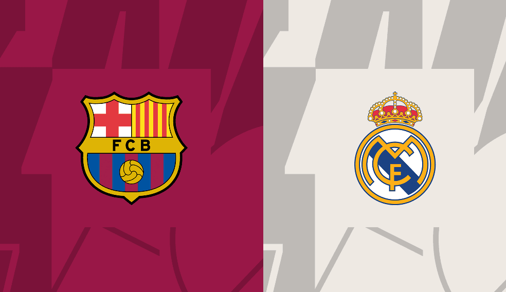

International Football Rivalries
This article ranks the fiercest international rivalries in football history.

Football rivalries are more than just matches—they're historic clashes fueled by pride, passion, and tradition. This event explores iconic rivalries from around the world, highlighting the cultural and competitive fire that defines them. Whether you're a lifelong fan or new to the sport, this site is designed to immerse you in the stories behind the fiercest battles on the pitch. Our audience includes sports enthusiasts, history buffs, and anyone curious about the deeper meaning behind the beautiful game.

The soccer ball — a simple object that carries the weight of history, pride, and fierce rivalry across nations and clubs.

El Clásico is one of football’s most watched rivalries, symbolizing the sport’s power to unite and divide across borders.

The USA vs Mexico rivalry is the fiercest in North American football, fueled by decades of competitive tension, cultural pride, and regional dominance.
Be part of the ultimate football rivalry experience! Sign up to join Rivalry Atlas — where fans from around the world come together to celebrate legendary matchups, share stories, and track every clash from El Clásico to the Old Firm. Your voice belongs in the rivalry.
⚽️ Diego from Argentina Supports River Plate.
⚽️ Liam from Scotland supports Celtic.
⚽️ Sofia from Spain supports Real Madrid.
⚽️ Jayden from USA Supports Seattle Sounders.
⭐ 4 fans have joined the rivalry event!
Welcome to the Rivalry Atlas! You solicitation has been accepted
This article ranks the fiercest international rivalries in football history.
This article explores iconic club matchups that shaped football culture worldwide.
This article explains how football unites people across borders, cultures, and socioeconomic divides.